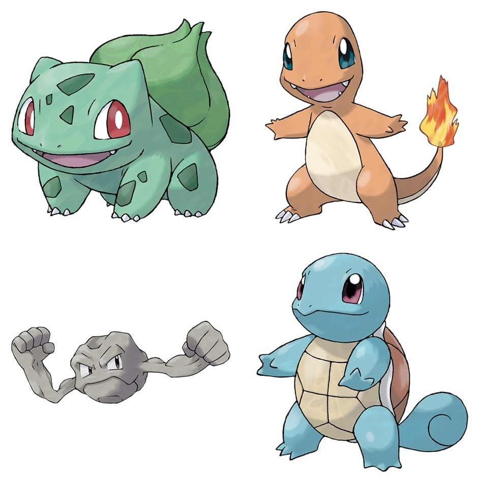
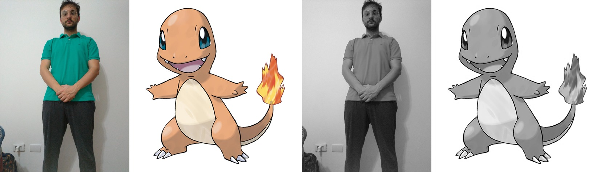

Neste laboratório, temos como objetivo a captura,processamento e tratamento de imagens, e para isto, iniciamos os procedimentos realizando capturas de fotografias do grupo e também de cada membro do grupo individualmente que posteriormente foram usadas para uma foto montagem com avatares pokemon.
Além disso também realizamos a gravação de dois videos, um apresentando a disciplina e outro com movimentos rápidos.
Então utilizando o Google Colab que nos permite trabalhar com códigos python na nuvem realizamos o tratamento das imagens e videos usando bibliotecas e ferramentas como opencv, pyplot e ffmpeg.
import os
import numpy as np
import matplotlib.pyplot as plt
import cv2 as cv
from google.colab import drive
from google.colab.patches import cv2_imshow as gcv_imshow
drive.mount('/content/drive/')
base_path = "/content/drive/My Drive/Colab Notebooks/csm/lab2"
Para realizar esse laboratório, foi criada uma fotomontagem com as fotos individuais de cada integrante do grupo para criar uma imagem única com todos. Essa fotomontagem possui o tamnho de 2560x1920 pixels.
Também criamos uma fotomontagem com os avatares de cada pessoa do grupo
Através do python foi feita a redução das imagens para 50% e 25% do tamanho original usando o código abaixo
img_grupo = cv.imread(base_path + "/grupo.jpg")
print("Tamanho original:", img_grupo.shape)
img_50 = cv.resize(img_grupo, None, fx=0.50, fy=0.50, interpolation = cv.INTER_CUBIC)
print("Tamanho após redução de 50%", img_50.shape)
img_25 = cv.resize(img_grupo, None, fx=0.25, fy=0.25, interpolation = cv.INTER_CUBIC)
print("Tamanho após redução de 25%", img_25.shape)
A redução pode ser vista no exemplo abaixo
Realizamos o procedimento de alteração de imagem para gerarmos a versão P&B das imagens dos integrantes do grupo e de seus supostos avatares. Segue abaixo o codigo utilizado para criação de tais imagens, bem como o código para exibir a imagem original e sua versão P&B lado a lado.
def plot_pb_side_by_side(img):
grey = cv.cvtColor(img, cv.COLOR_RGB2GRAY)
grey_3_channel = cv.cvtColor(grey, cv.COLOR_GRAY2BGR)
horizontal_stack = np.hstack((img, grey_3_channel))
gcv_imshow(horizontal_stack)
alunos_avatares = ["artur-lazarini-avatar.jpg", "cesar-seiji-avatar.jpg", "eric-souza-avatar.jpg", "wellington-araujo-avatar.jpg"]
for aluno in alunos_avatares:
img = cv.imread(base_path + "/" + aluno)
plot_pb_side_by_side(img)
print("\n\n")
print("\n\n\n")
plot_pb_side_by_side(img_grupo)
Executamos então o código acima para cada fotomontagem do integrante com seu avatar, o resultou nas imagens abaixo
Continuamos utilizando o Google Colab o tratamento dos videos capturados. Um dos vídeos possui Onde, um dos videos é o video de apresentação da disciplina pelos integrantes do grupo, enquanto o segundo vídeo apresenta movimentos mais rápidos e pequeno intervalo de execução entre os movimentos.
Em cada versão dos vídeos, nós realizamos a alteração de resolução da captura do vídeo, sendo a primeira versão possuindo 50% da resolução inicial e a segunda versão possuindo 25% da resolução inicial.
Segue abaixo a versão dos videos capturados, sem nenhuma alteração em sua resolução.
Realizamos as mudanças de resoluções em 50% e 25% para ambos os videos utilizando o codigo abaixo que utiliza a ferramenta ffmpeg.
# video 1
!ffmpeg -i "/content/drive/My Drive/Colab Notebooks/csm/lab2/o-grupo.mp4" -vf scale=960:540 -preset slow -crf 18 "/content/drive/My Drive/Colab Notebooks/csm/lab2/o-grupo_50.mp4" -y
!ffmpeg -i "/content/drive/My Drive/Colab Notebooks/csm/lab2/o-grupo.mp4" -vf scale=480:270 -preset slow -crf 18 "/content/drive/My Drive/Colab Notebooks/csm/lab2/o-grupo_25.mp4" -y
# video 2
!ffmpeg -i "/content/drive/My Drive/Colab Notebooks/csm/lab2/video-movimentos-rapidos-30fps.mp4" -vf scale=960:540 -preset slow -crf 18 "/content/drive/My Drive/Colab Notebooks/csm/lab2/video-movimentos-rapidos-30fps_50.mp4" -y
!ffmpeg -i "/content/drive/My Drive/Colab Notebooks/csm/lab2/video-movimentos-rapidos-30fps.mp4" -vf scale=480:270 -preset slow -crf 18 "/content/drive/My Drive/Colab Notebooks/csm/lab2/video-movimentos-rapidos-30fps_25.mp4" -y
Segue os videos com as resoluções alteradas em 50% e 25%, juntamente com o codigo utilizado para visualização dos videos.
# Video do Grupo
with open(base_path+"/o-grupo_50.mp4",'rb') as file:
grupo_50 = "data:video/mp4;base64," + b64encode(file.read()).decode()
with open(base_path+"/o-grupo_25.mp4",'rb') as file:
grupo_25 = "data:video/mp4;base64," + b64encode(file.read()).decode()
HTML(f"""
<video height=270 controls><source src= {grupo_25} type="video/mp4"></video>
<video height=540 controls><source src= {grupo_50} type="video/mp4"></video>
""")
# Video com movimentos rápidos
with open(base_path+"/video-movimentos-rapidos-30fps_50.mp4",'rb') as file:
mov_rapidos_50 = "data:video/mp4;base64," + b64encode(file.read()).decode()
with open(base_path+"/video-movimentos-rapidos-30fps_25.mp4",'rb') as file:
mov_rapidos_25 = "data:video/mp4;base64," + b64encode(file.read()).decode()
HTML(f"""
<video height=270 controls><source src= {mov_rapidos_25} type="video/mp4"></video>
<video height=540 controls><source src= {mov_rapidos_50} type="video/mp4"></video>
""")